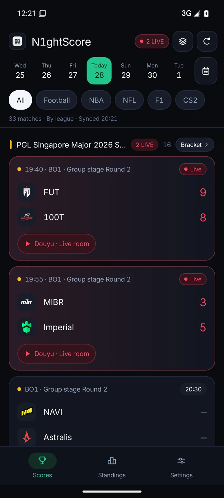

比赛覆盖
N1ghtScore 以北京时间组织七天赛程，在 All、Live 与 Saved 之间筛选当天的足球、NBA、NFL、F1 和 CS2 比赛。比分卡进入比赛详情，球队身份继续通往赛程页。
足球
覆盖英超、欧冠、英格兰联赛杯与足总杯，并加入挪威、英格兰和西班牙男足国家队。详情按来源提供球场、阵型、首发与替补、换人、进球、红黄牌及技术统计。
NBA 与 NFL
NBA 提供四节比分、球队对比、逐回合进程、球员数据与伤停状态。NFL 提供分节比分、球队对比，以及传球、冲球、接球和防守球员表。
F1
ESPN 提供练习、排位、冲刺、正赛的场次与成绩，列表显示前三名，详情呈现车手、车队、圈数、用时、积分和 Q1–Q3。Jolpica F1 提供车手与车队年度积分榜。
CS2
5EPlay 提供 Major、S+、S 级一线赛事和 Team Spirit 比赛。详情区分总览、两队选手数据与逐图比分，T/CT、加时及选手数据随地图切换。
球队与榜单
从比赛中的球队身份进入赛程，从 Standings 读取赛季排名与赛事路线。数据表固定身份列，并支持横向查看来源提供的补充指标。
球队赛程
足球、NBA 与 NFL 读取 ESPN 本季赛程。CS2 读取 5EPlay 战队赛程，包含最近三十场已结束比赛和已发布的一线未来场次。赛程按本队视角汇总胜负与近期战绩。
赛季榜单
足球、NBA 与 NFL 的榜单来自 ESPN，F1 年度积分榜来自 Jolpica F1。英超、欧冠、杯赛、NBA 分区、NFL 联盟与 F1 车手/车队各有对应表结构。
Valve VRS
Valve 官方 VRS 分为全球、欧洲、美洲和亚洲榜，提供该期名次、积分与战队阵容，每页三十队。发布日期与应用获取时间分开标注，Major 邀请以赛事方公告为准。
CS2 签表
根据 5EPlay 已公布数据展示瑞士轮、双败和单败赛制。瑞士轮可展开战绩路径，双败可切换胜者组与败者组，单败按轮次横排。
提醒与观看
时间已确认的未开赛比赛可以单场订阅。应用请求日历权限后优先写入小米账户日历，账户日历不可用时写入本机日历。
- 点日历图标订阅，开赛前五分钟提醒。再次点按可以取消。
- 赛程改期或取消时，应用只修改自己的日历事件。日历中的结束时间由应用估算，并在事件说明中标注。
- 来源确认完场后，后台任务更新最终比分并发送赛果通知。小米与澎湃 OS 可能延迟任务，请允许通知、自启动和后台运行。
足球与 NBA
咪咕匹配双方队名和开赛时间后提供英超、NBA 单场入口。
CS2
未开始与进行中都进入斗鱼直播间。已结束的一线赛事和 Team Spirit 比赛在核实后提供哔哩哔哩录像入口。
曼城男足集锦
欧冠、联赛杯与足总杯的已结束比赛可匹配指定哔哩哔哩账号的赛后集锦，英超继续使用咪咕。
外部平台
直播、回放与集锦通过外部链接打开。会员、登录、地区和客户端状态由对应平台决定。
设备与安装
手机采用单列赛程册，平板宽屏使用赛事导航、赛程和阅读三栏工作台。窗口变窄或字号放大后，详情与球队页自动回到单列。
- 系统版本
- Android 9 或更高版本（minSdk 28）
- 应用包名
- cn.myscore.app
- 界面与时间
- 英文界面，赛程按 Asia/Shanghai 时区组织
- 安装包
- 个人安装包，签名一致时直接覆盖升级。卸载会清除设置、缓存与日历关联
- 从 GitHub Releases 下载 APK，覆盖安装旧版本可以保留应用数据。
- 在 Scores 切换赛事和日期，点比赛进入详情，点球队身份进入赛程。
- 在 Standings 查看赛季榜单、Valve VRS 与 CS2 签表。
- 按需授予日历与通知权限，并在 Settings 中检查更新。安装前会核对 SHA-256、包名、版本与签名，再交给系统安装器确认。
数据与缓存
足球、NBA 与 NFL 的赛程、详情、球队日程和榜单来自 ESPN。F1 场次与成绩来自 ESPN，年度积分榜来自 Jolpica F1。CS2 赛程、详情与战队赛程来自 5EPlay，区域排名来自 Valve 官方 VRS。
缓存
赛程、详情、球队页、榜单、队标和外链索引保留最近一次可用结果。临近开赛与直播场次刷新更快，已结束与过去赛程降低频率。
失败
单一来源失败时保留真实缓存与获取时间，其他来源继续显示。系统清理缓存后，需要重新读取来源。
字段
来源提供的阵容、地图比分和统计才会展示。待发布、旧快照缺字段与未知比分会显示明确状态，避免生成比赛数据。
本机数据
应用在本机保存偏好、赛事缓存、队标缓存与日历事件关联。公开接口不依赖账户、API Key 或 Google 服务，小米账户日历的云同步由系统日历完成。
网页版与源码
网页版使用 Scores / Standings 浏览赛事内容，作为独立入口。Android 版在此基础上提供系统日历、完场通知、原生平板工作台和应用内更新。源码、版本记录与校验文件统一放在 GitHub。